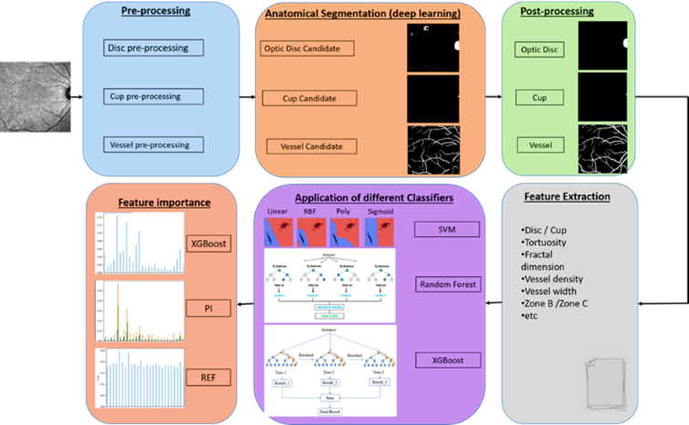

Background:
Multiple sclerosis (MS), an immune-mediated, demyelinating disease of the central
nervous system, is associated with multiple pathological changes within the retina. Optical coherence
tomography (OCT) investigations have revealed a reduction in the thickness of retinal nerve fiber and
ganglionic cell layers, and studies based on fundus photography have shown impaired retinal blood
circulation among MS patients. However, these findings are not specific to MS, and can be observed in
other neurodegenerative and ocular disorders as well. This project provides the first study aimed to
investigate whether any MS-specific feature can be found within infrared reflectance scanning laser
ophthalmoscopy (IR-SLO) images, i.e., monochromatic fundus-like images often taken along with OCT.
Aim:
The retinal changes occurring in MS can be effectively tracked through the analysis of IR-SLO
images. The novel biomarkers of MS proposed in this study, primarily related to retinal vessels, could
serve as additional or even substitute diagnostic markers to those currently obtained from time-consuming,
costly, and invasive procedures.
Plan:
An age-matching subject-wise stratified k-fold cross-validation data splitting approach will be
applied for constructing the training, validation and test datasets, minimizing the risk of model
overfitting. Machine learning models will be applied to the resulting features obtained from the
anatomical structures of fundus for classifying MS. Finally, the contribution of each feature to the
prediction of the best-performing model is calculated using feature importance methods.

Candidate profile:
We are seeking highly motivated candidates with a strong background in computer science, machine
learning, or a related field. The ideal candidate should possess solid programming skills. Strong
analytical skills,
problem-solving abilities, and excellent communication and collaboration skills are essential for
success in this PhD position.
Further information:
This PhD position offers a supportive research environment, access to state-of-the-art facilities,
and the opportunity to collaborate with leading researchers in the field. The successful candidate
will receive a competitive stipend and opportunities for conference participation and publication
of research findings.
Application details:
To apply for this position, interested candidates should submit a detailed CV, a cover letter
outlining their research interests and motivation for pursuing a PhD.
Shortlisted candidates will be invited for an interview to further discuss their research ideas
and suitability for the position.
Expected start date: January, May, and September of each academic year.
Duration: This is a three-year position
For more information about the project, please contact the supervisory team.